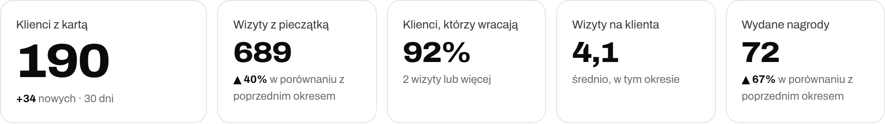
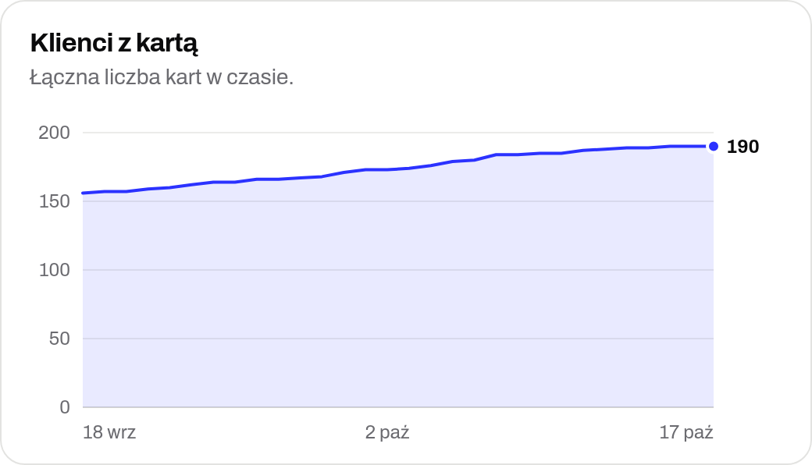
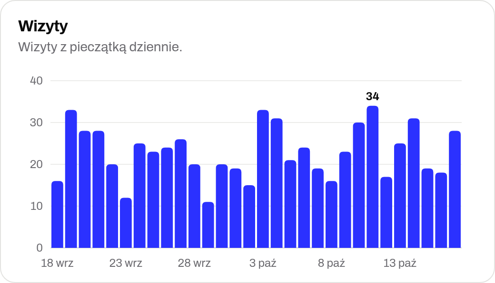
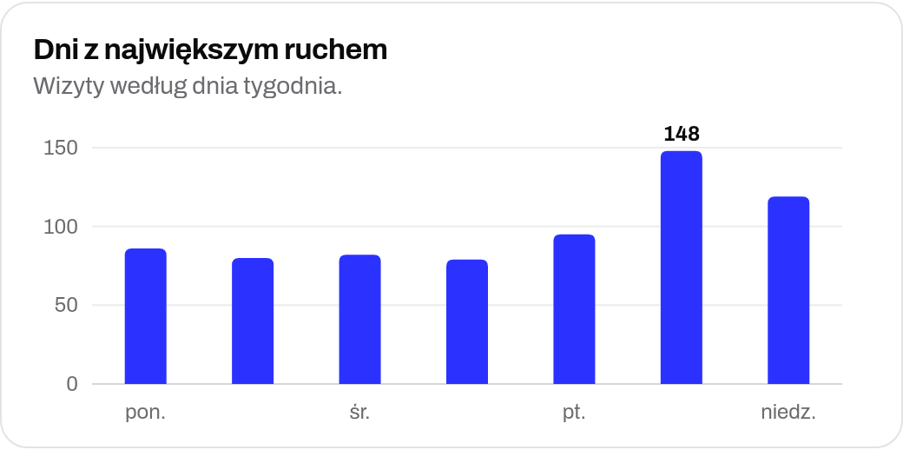
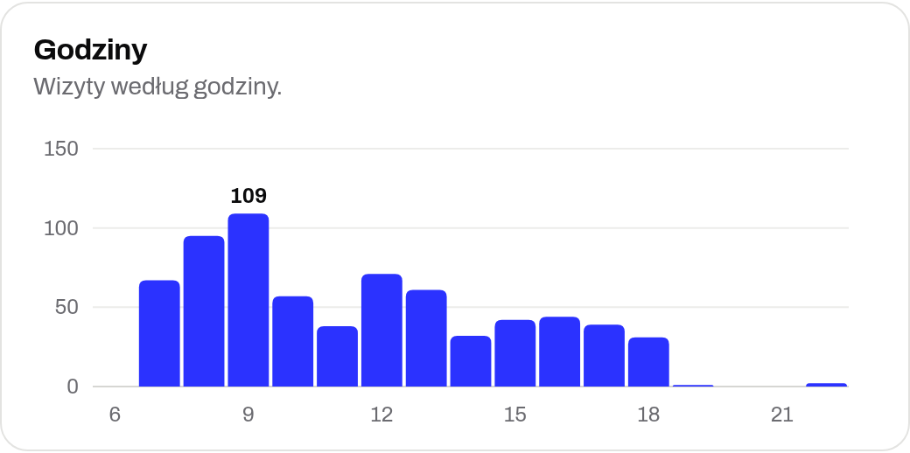
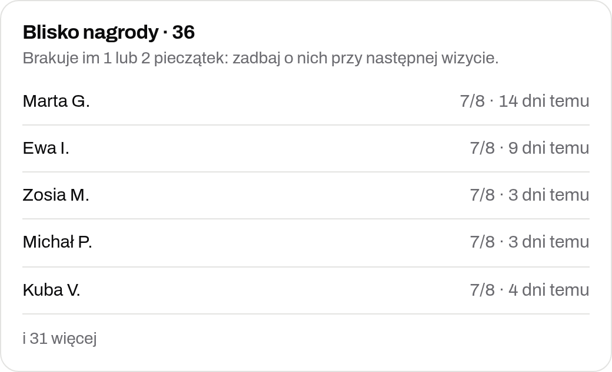
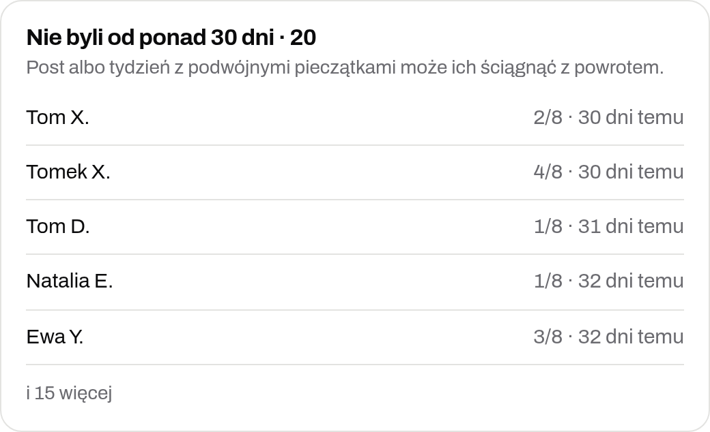
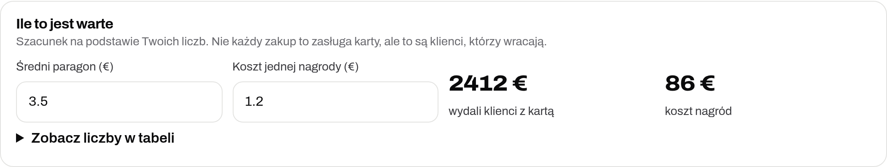
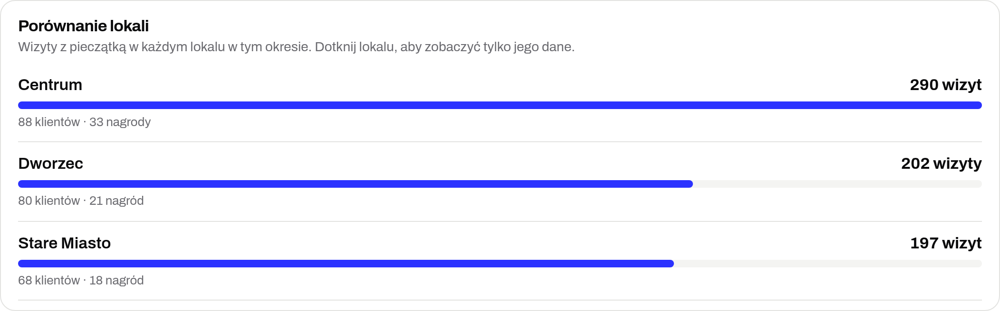

<!doctype html>
<html lang="pl">
<head>
<meta charset="utf-8">
<meta name="viewport" content="width=device-width, initial-scale=1">
<title>Timbro: co zyskujesz</title>
<link rel="stylesheet" href="../assets/css/base.css">
<style>
/* For a café owner: what Timbro gives them, what paper cards cost, what the Results panel shows.
   Three A4 pages; print/make-pdfs.js saves print/korzysci-dla-wlasciciela-pl.pdf.
   The panel pictures in img/ are screenshots of the demo dashboard (Polish, example data). */
@page{size:A4;margin:0}
html,body{margin:0;background:#E6E4DF}
body{font-family:var(--font);color:var(--ink)}
.page{width:210mm;height:297mm;box-sizing:border-box;padding:16mm 16mm 14mm;background:#fff;margin:0 auto 20px;position:relative;overflow:hidden;page-break-after:always;break-after:page}
@media print{html,body{background:none}.page{margin:0}}
.kicker{font:500 9.5pt/1 var(--mono);letter-spacing:.14em;text-transform:uppercase;color:var(--pop);margin:0 0 4mm}
h1{font-size:29pt;line-height:1.05;font-stretch:112%;font-weight:800;margin:0 0 4mm;letter-spacing:-.01em}
h2{font-size:16pt;line-height:1.15;font-stretch:108%;font-weight:800;margin:5.5mm 0 2.5mm}
h3{font-size:11.5pt;margin:0 0 1.5mm}
p,li{font-size:10.5pt;line-height:1.45;margin:0 0 2.5mm;color:var(--ink-2)}
.lede{font-size:12pt;color:var(--ink-2);max-width:160mm}
.grid{display:grid;gap:4mm}
.g2{grid-template-columns:1fr 1fr}.g3{grid-template-columns:repeat(3,1fr)}
.box{border:1.5px solid var(--line);border-radius:4mm;padding:3.2mm 4mm}
.box p{margin:0;font-size:9.4pt;line-height:1.4}
.box b.i{display:inline-grid;place-items:center;width:6mm;height:6mm;border-radius:50%;background:var(--pop);color:#fff;font-size:9pt;margin-bottom:1.5mm}
table{border-collapse:collapse;width:100%;font-size:10.5pt}
td,th{padding:1.6mm 3mm;border-bottom:1.2px solid var(--line);text-align:left;vertical-align:top}
th{font:500 8pt/1.2 var(--mono);letter-spacing:.08em;text-transform:uppercase;color:var(--muted)}
td.r,th.r{text-align:right;white-space:nowrap}
tr.total td{font-weight:800;border-bottom:0;font-size:11.5pt}
.hl{background:var(--ink);color:#fff;border-radius:4mm;padding:5mm 6mm;display:flex;gap:6mm;align-items:center}
.hl .big{font-size:26pt;font-weight:800;font-stretch:115%;line-height:1;white-space:nowrap}
.hl p{color:#fff;opacity:.85;margin:0}
.note{font-size:8.5pt;color:var(--muted);line-height:1.4}
img.shot{display:block;width:100%;border-radius:3mm;border:1px solid var(--line)}
.pair{display:grid;grid-template-columns:1fr 1fr;gap:4mm;align-items:start}
.cap h3{margin-top:2.5mm}
.cap p{font-size:9.5pt;margin:0}
.cap img.narrow{width:80%}
ul.plain{margin:0;padding-left:5mm}
.foot{position:absolute;left:16mm;right:16mm;bottom:8mm;display:flex;justify-content:space-between;font:500 8pt/1 var(--mono);letter-spacing:.08em;color:var(--muted);text-transform:uppercase}

/* PDF viewers (iPhone) draw soft shadows as grey boxes: none in print, a thin edge instead */
@media print{*{box-shadow:none!important;filter:none!important;text-shadow:none!important}.pass{outline:1px solid rgba(0,0,0,.12);outline-offset:-1px}}
</style>
</head>
<body>
<div id="doc"></div>
<script src="../assets/vendor/qrcode.js"></script>
<script src="../assets/js/config.js"></script>
<script src="../assets/js/i18n.js"></script>
<script src="../assets/js/stamps.js"></script>
<script src="../assets/js/ui.js"></script>
<script>
window.WAIT_READY = true;
(async () => {
  I18N.lang = 'pl';
  const plan = id => CONFIG.plans.find(p => p.id === id);
  const site = CONFIG.siteUrl.replace(/^https?:\/\//, '').replace(/\/$/, '');
  const foot = n => `<div class="foot"><span>Timbro · Witkowski Design · ${site}</span><span>${n} / 3</span></div>`;
  // Example café: the website calculator's defaults (200 regulars, 40% take the card, 1 extra visit a month),
  // with a Polish average receipt. Customers join over the first three months (0.35, 0.7, then full).
  const regulars = 200, join = 0.4, extra = 1, ticket = 18;
  const members = regulars * join, month = members * extra * ticket, year = Math.round(month * (0.35 + 0.7 + 10) / 100) * 100;
  const zl = n => n.toLocaleString('pl-PL') + ' zł';
  const paper = [['Druk kart: 80 nowych miesięcznie × 12 × 0,25 zł', 240], ['Pieczątka z logo (wymiana co 1 do 2 lat)', 60], ['Tusz do pieczątki', 30], ['Dodruk po zmianie wzoru lub promocji', 150]];
  const paperTotal = paper.reduce((a, [, v]) => a + v, 0);

  document.getElementById('doc').innerHTML = `
  <section class="page">
    <p class="kicker">Dla właściciela kawiarni</p>
    <h1>Co Twój lokal zyskuje z Timbro.</h1>
    <p class="lede">Timbro zamienia papierową kartę z pieczątkami w kartę w telefonie klienta (Apple Wallet i Google Wallet). Co z tego masz, ile kosztuje papier i co zobaczysz w panelu.</p>
    <div class="grid g3" style="margin-top:4mm">
      <div class="box"><b class="i">1</b><h3>Klienci wracają częściej</h3><p>Widzą w telefonie, ile brakuje do nagrody, i dostają powiadomienie, gdy są blisko.</p></div>
      <div class="box"><b class="i">2</b><h3>Karta się nie gubi</h3><p>Jest tam, gdzie bilety i karty pokładowe. Nikt nie zaczyna od zera, bo zostawił kartę w kurtce.</p></div>
      <div class="box"><b class="i">3</b><h3>Wiesz, kto jest stałym klientem</h3><p>Ile osób ma kartę, kto wraca, w jakie dni i godziny jest ruch.</p></div>
      <div class="box"><b class="i">4</b><h3>Przypomnienia same się wysyłają</h3><p>Klient, który nie był od np. 21 dni, dostaje wiadomość z Twoim tekstem i swoim imieniem.</p></div>
      <div class="box"><b class="i">5</b><h3>Zero druku kart i pieczątek</h3><p>Zmieniasz wygląd karty, a klienci widzą nowy od razu, bez dodruku.</p></div>
      <div class="box"><b class="i">6</b><h3>Gotowe materiały na start</h3><p>Plakat z kodem QR, posty na Instagrama, teksty dla obsługi i plan na pierwszy tydzień.</p></div>
    </div>

    <h2>Ile kosztuje papierowa karta w małej kawiarni</h2>
    <table>
      <tr><th>Koszt (przykład, ceny orientacyjne)</th><th class="r">Rocznie</th></tr>
      ${paper.map(([k, v]) => `<tr><td>${k}</td><td class="r">${zl(v)}</td></tr>`).join('')}
      <tr class="total"><td>Razem, sam papier i pieczątki</td><td class="r">ok. ${zl(paperTotal)}</td></tr>
    </table>
    <p class="note" style="margin-top:2mm">Podstaw swoje liczby: ile kart wydajesz miesięcznie i ile płacisz drukarni. W sieci z wieloma lokalami ta kwota rośnie z każdym lokalem.</p>

    <div class="hl" style="margin-top:4mm">
      <div class="big">ok. ${zl(year)}</div>
      <p><b>dodatkowego utargu w pierwszym roku</b> w przykładowej kawiarni: ${regulars} stałych klientów, ${Math.round(join * 100)}% bierze kartę (${members} osób), każda przychodzi o ${extra} raz w miesiącu częściej, średni paragon ${ticket} zł. Oszczędność na papierze to dodatek; główny zysk to klienci, którzy wracają.</p>
    </div>
    <p class="note" style="margin-top:2mm">Szacunek, nie gwarancja. Koszt nagród nie jest odjęty. Kalkulator z suwakami: ${site}, sekcja „Liczby”. Timbro kosztuje od ${plan('start').month} € miesięcznie netto (plan Start).</p>
    ${foot(1)}
  </section>

  <section class="page">
    <p class="kicker">Panel lokalu · zakładka Wyniki</p>
    <h1>Co widzisz w panelu.</h1>
    <p class="lede">Każda pieczątka to zapisana wizyta. Z nich panel liczy, co karta daje Twojemu lokalowi. Możesz wybrać ostatnie 30 dni, 90 dni albo cały okres.</p>
    
    <div class="grid g3" style="margin-top:3mm">
      <p><b>Klienci z kartą:</b> ile osób ma Twoją kartę i ilu doszło w tym okresie.</p>
      <p><b>Wizyty z pieczątką:</b> ile razy klienci przyszli, z porównaniem do poprzedniego okresu.</p>
      <p><b>Klienci, którzy wracają:</b> jaki procent był co najmniej dwa razy.</p>
      <p><b>Wizyty na klienta:</b> jak często średnio wraca jedna osoba.</p>
      <p><b>Wydane nagrody:</b> ile kart klienci zapełnili do końca.</p>
    </div>
    <div class="pair" style="margin-top:4mm">
      <div class="cap"><h3>Klienci z kartą w czasie</h3><p>Jak rośnie liczba kart od startu. Widać, czy plakat i posty działają.</p></div>
      <div class="cap"><h3>Wizyty</h3><p>Wizyty z pieczątką dzień po dniu (albo tygodniowo i miesięcznie przy dłuższym okresie).</p></div>
      <div class="cap"><h3>Dni z największym ruchem</h3><p>W które dni tygodnia przychodzi najwięcej klientów z kartą.</p></div>
      <div class="cap"><h3>Godziny</h3><p>O której jest szczyt. Pomaga zaplanować obsługę i promocje na spokojniejsze godziny.</p></div>
    </div>
    ${foot(2)}
  </section>

  <section class="page">
    <p class="kicker">Panel lokalu · zakładka Wyniki</p>
    <h1>Kogo zaprosić z powrotem.</h1>
    <div class="pair" style="margin-top:4mm">
      <div class="cap"><h3>Blisko nagrody</h3><p>Klienci, którym brakuje 1 lub 2 pieczątek. Warto o nich zadbać przy następnej wizycie.</p></div>
      <div class="cap"><h3>Nie byli od ponad 30 dni</h3><p>Komu wysłać przypomnienie albo dla kogo zrobić tydzień z podwójnymi pieczątkami.</p></div>
    </div>
    <div class="cap" style="margin-top:4mm"><h3>Ile to jest warte</h3><p>Wpisujesz średni paragon i koszt nagrody, a panel liczy, ile wydali klienci z kartą i ile kosztowały nagrody. Liczby możesz też zobaczyć w tabeli.</p></div>
    <div class="cap" style="margin-top:4mm"><h3>Porównanie lokali (plany Pro i Sieci)</h3><p>Masz kilka lokali? Każdy telefon przy kasie przypisujesz do lokalu i widzisz wizyty, klientów i nagrody osobno dla każdego.</p></div>
    <h2>Pozostałe zakładki panelu</h2>
    <div class="grid g2" style="gap:1mm 5mm">
      <p><b>Klienci:</b> lista osób z kartą (imię, kontakt, pieczątki, ostatnia wizyta), w planie Pro eksport do Excela. Zgoda na oferty jest zaznaczona przy każdym kliencie.</p>
      <p><b>Powiadomienia:</b> teksty „Już blisko”, „Nagroda gotowa”, przypomnienie po X dniach i powiadomienie w pobliżu lokalu, z podglądem na telefonie.</p>
      <p><b>Kasa:</b> telefony obsługi łączysz jednym kodem; obsługa nie widzi danych kontaktowych klientów.</p>
      <p><b>Karta, Druk, Promocja:</b> wygląd karty, plakat A5 z kodem QR, gotowe posty i plan startu.</p>
    </div>
    <p class="note" style="margin-top:3mm">Zrzuty pochodzą z wersji demo panelu i pokazują dane przykładowe.</p>
    ${foot(3)}
  </section>`;
  await Promise.all([...document.images].map(i => i.complete ? 0 : new Promise(ok => { i.onload = i.onerror = ok; })));
  await document.fonts.ready;
  window.READY = true;
})();
</script>
</body>
</html>
